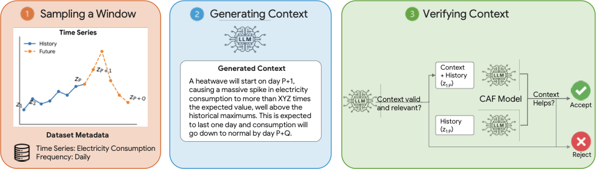
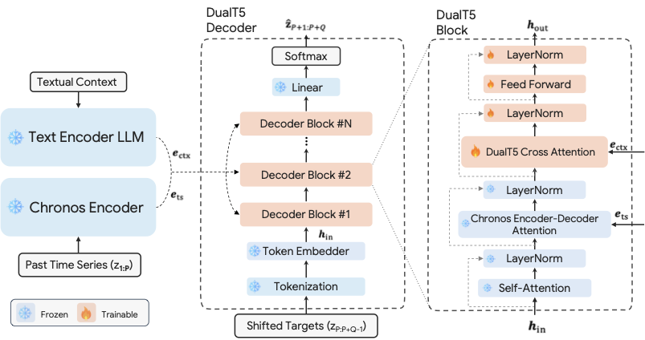
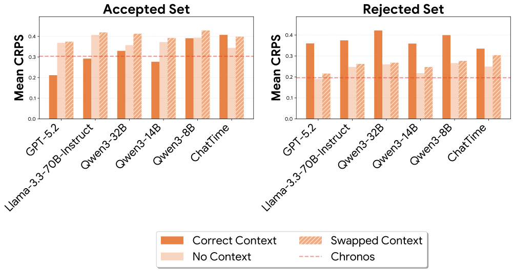
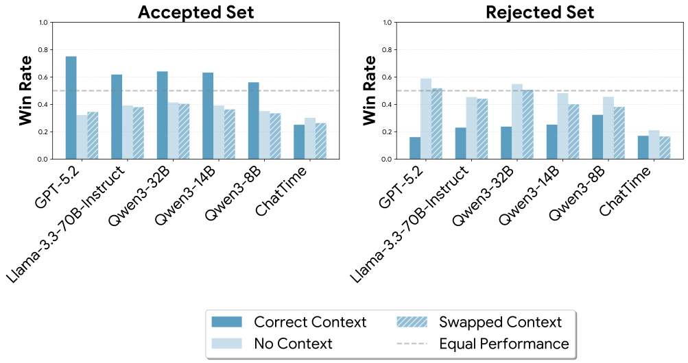

Efficient, context-aided probabilistic forecasting for the real world.
Context-aided forecasting integrates external knowledge—incident reports, domain narratives, policy changes—with numerical time series to improve predictions. Yet multimodal models often fail to outperform unimodal baselines. We hypothesize the bottleneck is data quality: many existing datasets rely on contextual sources whose relevance to the forecast and complementarity with historical data is uncertain, including matched web text, generated descriptions, or templated context.
We introduce CAF-7M, a semi-synthetic corpus of 7 million context-augmented time series windows spanning 11 domains. Our pipeline generates plausible scenarios using an LLM conditioned on both history and future values, then verifies test-set contexts by checking whether a strong forecaster improves when conditioned on them. This yields a rigorously validated test set with context that are relevant and complementary to numerical histories. The test set contains 904 verified windows split into HARD and EASY subsets.

To showcase the value of CAF-7M, we train a multimodal model on it: DoubleCast. DoubleCast augments the Chronos time series foundation model with a pre-trained text encoder (Qwen3-14B). Each decoder block gains a DualT5 cross-attention layer that attends to text embeddings alongside the standard encoder–decoder attention over time series embeddings. This lightweight alignment largely preserves Chronos's numerical forecasting capability while enabling context-conditional predictions.

On the Accepted set, correct context significantly improves both CRPS and win rate across all LLMs and multimodal forecasters. Swapped contexts do not improve over no context, confirming that gains are driven by complementary information—not any random text. On the Rejected set, providing context actually hurts accuracy. This highlights the importance of filtering: without it, low-quality contexts could lead to the wrong conclusion that a method cannot leverage context, when the contexts are simply not useful.


DoubleCast trained on CAF-7M achieves the highest win rate across all splits and is competitive with Direct Prompt using GPT-5.2 in CRPS, ranking second on ALL and HARD while achieving the best CRPS on EASY. Removing or swapping context markedly degrades both metrics, confirming that DoubleCast actively leverages context.
| Model | ALL | HARD | EASY | |||
|---|---|---|---|---|---|---|
| CRPS | Win | CRPS | Win | CRPS | Win | |
| Chronos | 0.278 | — | 0.304 | — | 0.247 | — |
| ChatTime | 0.385 | 0.25 | 0.407 | 0.25 | 0.358 | 0.25 |
| DP Qwen3-14B | 0.296 | 0.51 | 0.277 | 0.63 | 0.319 | 0.36 |
| DP GPT-5.2 | 0.217 | 0.62 | 0.212 | 0.75 | 0.223 | 0.47 |
| DoubleCast | 0.231 | 0.71 | 0.251 | 0.79 | 0.204 | 0.64 |
| no context | +18.3% / −34.7% | +22.0% / −41.9% | +11.1% / −21.5% | |||
| swapped context | +26.5% / −37.6% | +25.2% / −40.8% | +25.4% / −37.7% | |||
[1] Williams et al., "Context is Key: A Benchmark for Forecasting with Essential Textual Information," ICML 2025. arXiv:2410.18959
Explore forecasts on the CAF-7M HARD split. Toggle models to compare predictions with and without context. Swapped substitutes the real context with one drawn from a different time series, serving as a sensitivity check.